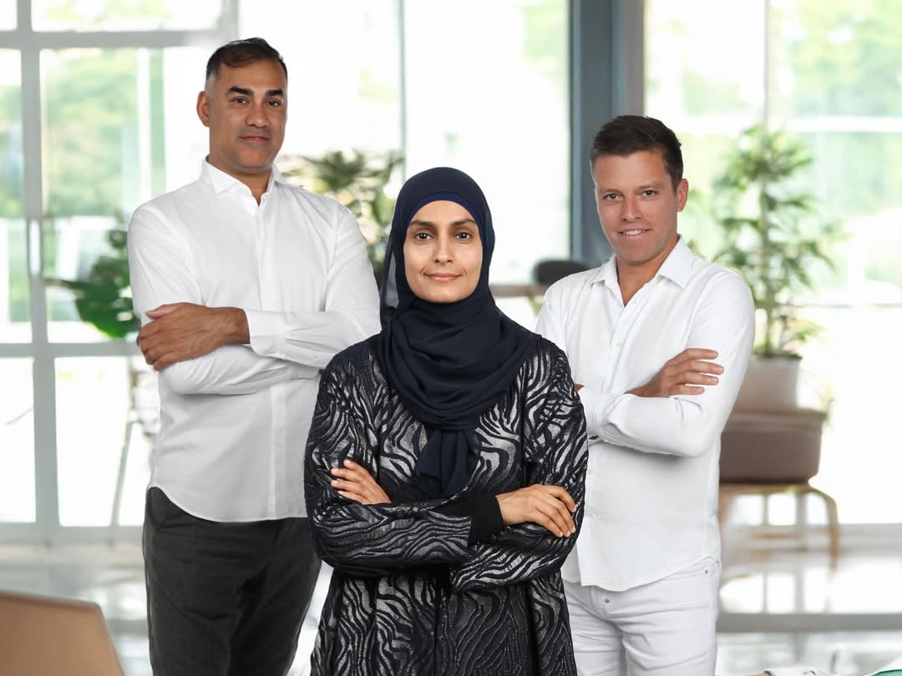

Cross-cultural integration workshops
Facilitated sessions that improve understanding, communication, and collaboration.
Swiss precision. Dubai momentum. Human integration.
We help Dubai companies align expatriate and local talent through communication strategy, cross-cultural leadership, and integration programmes designed for lasting collaboration.
استثمر في رأس مالك البشري، واصنع قيادة تُنفّذ وتُنجز
Invest in your human capital, and build leadership that executes and delivers.
What we do
Most organisations treat Emiratisation as a hiring target. The real gap is relational — communication, trust, and leadership behaviours are often misaligned between local and expatriate professionals. We design advisory and training experiences that close it, on both sides of the equation.
Facilitated sessions that improve understanding, communication, and collaboration.
Support for positioning Emiratisation as a strong integration model across both sides.
Practical frameworks for managers leading mixed local and international teams.
Strategic guidance for organisations shaping culture, structure, and communication.
Refined systems that improve belonging and clarity from the first day of employment.
Curated workshops and advisory formats based on team size, sector, and current gaps.
How it works
Simple enough to understand quickly, structured enough to trust.
We assess communication gaps, leadership realities, and integration priorities.
We create a tailored roadmap based on your team, goals, and organisational context.
We deliver advisory sessions, workshops, or leadership interventions with clarity and pace.
We translate learning into practical behaviours, stronger trust, and repeatable team habits.
Outcomes
Better alignment creates stronger communication, better retention, and a more coherent culture across mixed local and international teams.

Leadership
Swiss Leadership Consultancy is a cross-cultural leadership partner grounded in Swiss standards of precision and structure, with a practical understanding of how trust, relationships, and local context shape business in the UAE.
Client perspective
"Swiss Leadership Consultancy gave our leadership team a language and structure for conversations we had been avoiding for too long."
HR Director Dubai-based professional services firm"Their approach made Emiratisation feel practical, respectful, and genuinely useful for both local and expatriate team members."
Operations Leader Regional growth company"The difference was not only training. It changed how managers guided collaboration across the team."
Managing Partner Private sector organisation in the UAEFAQ
Clear answers help leadership teams understand where integration support fits and how an engagement typically begins.
Integration means building the communication, trust, and leadership conditions that help expatriate and Emirati professionals work well together.
Emiratisation is an important keyword and business context, but our approach focuses on both local and expatriate sides of the equation.
Yes. The offer is designed to be adapted by industry, team size, leadership level, and current organisational maturity.
Usually with a strategy call to understand your company context, challenges, and what level of intervention is needed first.
Start the conversation
Let's shape an integration strategy that strengthens communication, leadership, and long-term collaboration in your organisation.